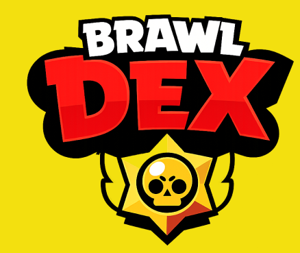

El Brawl Pass es una mecánica añadida al juego en mayo del 2020, la cual recibió su propio botón en el menú para acceder a él. El Brawl Pass permite al jugador avanzar tras niveles utilizando XP, conseguidos a base de jugar y completar misiones; adquiriendo diferentes recompensas. Este reemplaza al anterior sistema de progreso, el cual consistía en conseguir una Caja Pequeña al conseguir 100 Fichas y una Caja Grande al conseguir 10 Fichas Estrella. El Brawl Pass contiene 60 niveles, con recompensas como: Monedas, Gemas, Puntos de Fuerza, Créditos, Premios Starr, Reacciones, Sprays, Premios Starr, Blines, Aspectos, etc… Estas recompensas se dividen entre los tres tipos de Brawl Pass: El Brawl Pass Gratis, el Brawl Pass de Pago y el Brawl Pass Plus. El Brawl Pass de Pago y el Brawl Pass Plus dan recompensas que el Brawl Pass Gratis no puede ofrecerte: que incluyen Llaves, Blines, un título exclusivo con su propia coloración, Reacciones, muchos más recursos, etc…
Las misiones son objetivos que recompensan XP. Existen misiones pequeñas, medianas y difíciles, las cuales ayudan a progresar en el Brawl Pass.